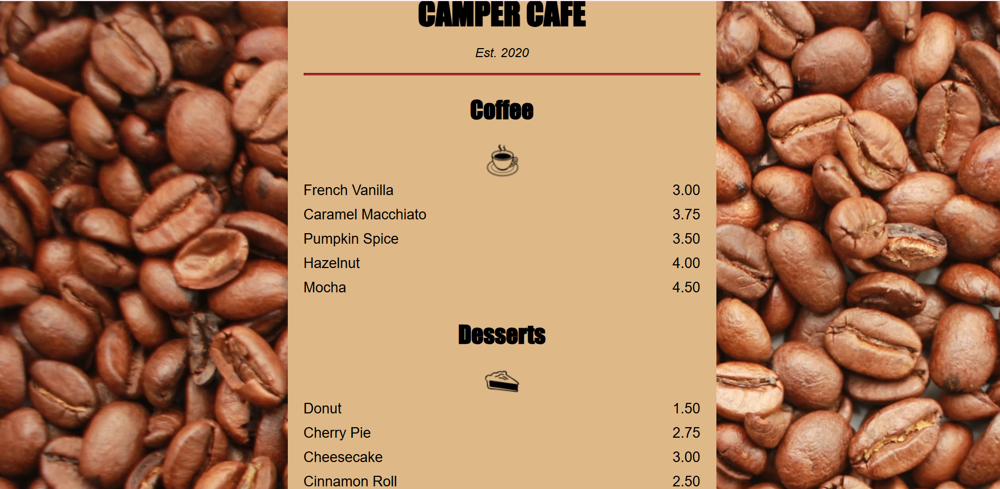
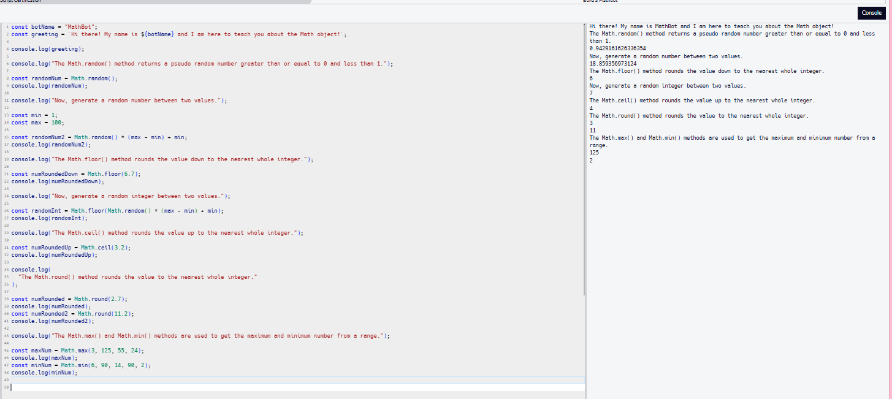

Welcome to My Portfolio
Hi! I'm Vernita. My background is in business, operations, and process improvement, but I've always been good at learning new systems and figuring out how things work. I joined the CodeSquad Mini Course to step outside of my comfort zone, explore tech, and get hands-on experience with HTML, CSS, and JavaScript.
Tech Careers I'm Exploring
Business Systems Analyst
I enjoy learning systems, improving processes, and finding ways technology can make work more efficient.
Application Analyst
This career interests me because it combines technology, troubleshooting, and helping people use systems effectively.
Software Engineer
I want to continue exploring software development and learn more about how applications are built and maintained.
Where I'd Love to Travel
Brazil
I'd love to visit Brazil to experience the culture, food, and scenery. One thing that's definitely on my list is trying an authentic Brazilian steakhouse and experiencing it in Brazil for myself.
My CodeSquad Projects
Here are a few projects I completed during the CodeSquad Mini Course.

Hotel Feedback Form
Built an interactive form using HTML with text fields, checkboxes, radio buttons, and dropdown menus.

Camper Cafe
Created and styled a cafe menu while practicing HTML and CSS.

MathBot
Used JavaScript and the Math object to work with numbers, calculations, and random values.